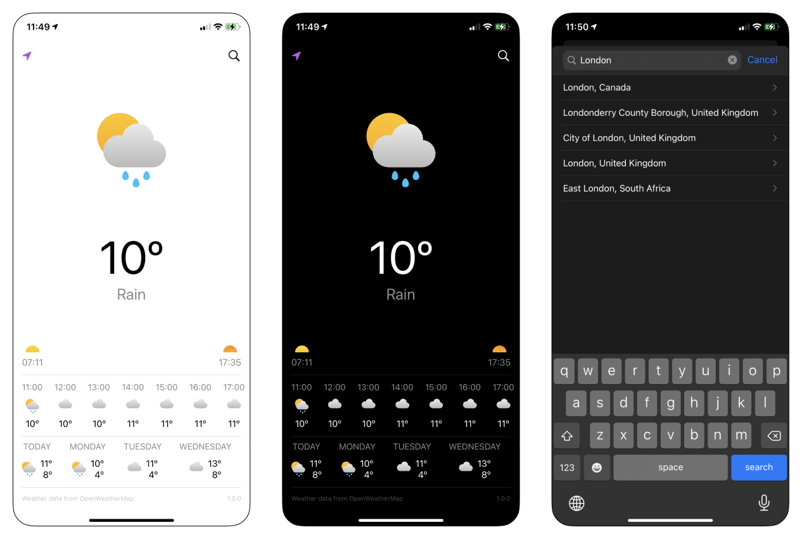
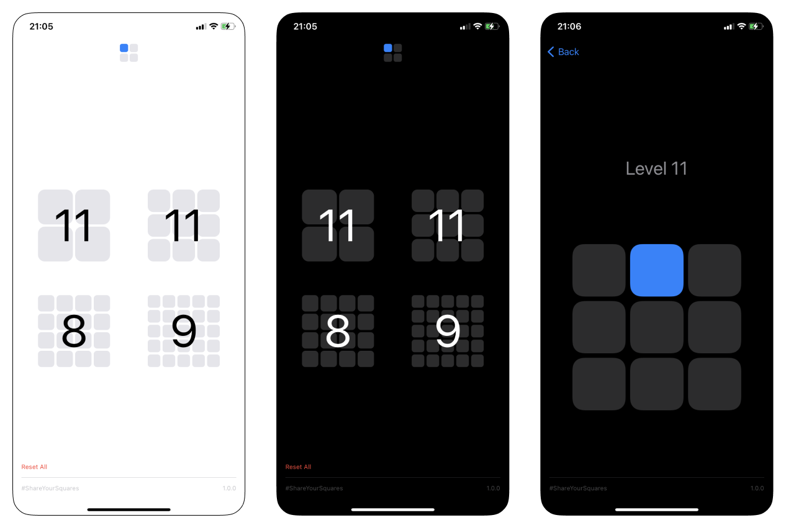
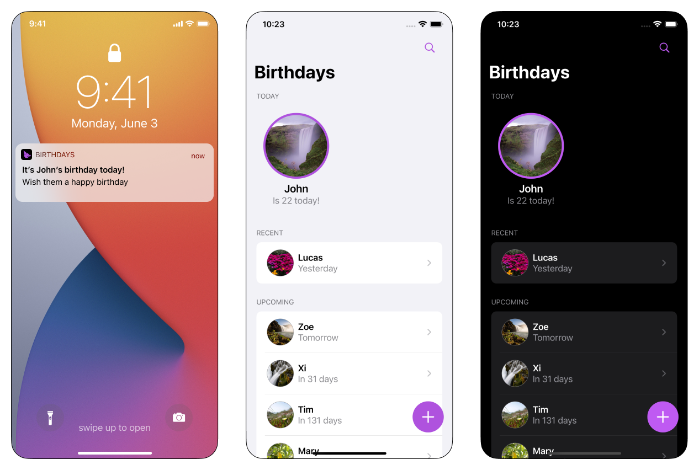

<!-- <!DOCTYPE html>
<html lang="en">
  <head>
    <meta charset="UTF-8" />
    <meta http-equiv="X-UA-Compatible" content="IE=edge" />
    <meta name="viewport" content="width=device-width, initial-scale=1.0" />
    <title>Basico</title>
    <link rel="stylesheet" type="text/css" href="project.css" />
  </head>
  <body>
    <div class="project-content">
      <a class="button" href="index.html">← Home</a>
      <h1>Basico</h1>
      <p>
        On March 2021 I started building Basico, an iOS lab where I’m building
        SwiftUI apps. After finishing the 100 Days of SwiftUI course by Paul
        Hudson, I was really excited to start building my own apps. Even though
        I had already built multiple throughout the course, I wanted to
        consolidate my learnings by working on my own ideas.
      </p>
      <h2>Why Basico?</h2>
      <p>
        When learning a new skill, the transition between consuming and creating
        can be overwhelming. Everything looks easier when you have someone
        guiding you through the process of learning than when you’re put in
        front of an empty document. I wanted to make sure I didn’t fall into the
        trap of setting too ambitious goals, so I created Basico to set some
        constraints to get started:
        <br /><br />
        • The name Basico (Spanish for basic) frames the complexity of the apps
        I could build under the brand.<br />
        • None of the apps would attempt to create something radically new.<br />
        • I would make use of native SwiftUI views where possible to ensure
        brand consistency.<br />
        • I would aim to limit myself to a weekend worth of work on each app.
      </p>
      <h2>A bit about each app</h2>
      <p>
        The first three apps I’ve built are a weather app, a memory game and a
        birthday reminders app. A fourth one, a habit tracker, followed those
        three shortly after. Here’s a short description about each of them,
        including some of the key learnings.
      </p>
      <h2>Weather</h2>
      <p>
        The first app under the Basico brand was a weather app. It uses
        OpenWeather API to fetch weather data. It started as a single view that
        showed the current weather for a city selected by the user. But then it
        quickly evolved to show the current weather, hourly and daily forecast
        based on the user’s location. The initial option to search for the
        current weather on most cities around the world was relegated to a
        secondary sheet view. I used Datahub to get the list of cities, and used
        their geonameid to get an accurate weather for each location.
      </p>
      <div class="asset-container">
        
        <p class="caption">Screenshots of the weather app</p>
      </div>
      <h2>Squares</h2>
      <p>
        Squares is a minimal memory game. Players are shown a sequence they have
        to memorise and repeat to move on to the next level. The sequence
        increases by one on every level, and players can pick between 4
        different grids to play - 2x2, 3x3, 4x4 and 5x5 square grids.
      </p>
      <div class="asset-container">
        
        <p class="caption">Screenshots of the memory game Squares</p>
      </div>
      <h2>Birthdays</h2>
      <p>
        Birthdays helps people keep track of… ermm… Birthdays. I’m not great at
        remembering people’s birthdays and, while Facebook has helped in the
        past, I still miss birthdays I want to remember. Maybe it’s the fact the
        Facebook’s notifications are something like “Jane Doe and 4 others have
        their birthdays today…” or maybe I just tend to ignore Facebook
        notifications altogether - I needed a better way to be reminded. And
        yes, I know you can add birthdays to contacts on your iPhone. But I’m
        still learning SwiftUI, so I thought it was a great opportunity to put
        some concepts into practice.
      </p>
      <div class="asset-container">
        
        <p class="caption">Screenshots of Birthdays</p>
      </div>
      <h2>Superhabits</h2>
      <h2>basico.xyz</h2>
      <p>
        Finally, I’ve built a website to serve as a library of all the apps I’m
        building under the Basico brand. The goal for the site was to keep it as
        simple as possible, in line with the apps. I used Jordan Singer’s
        ibuildmyideas.com code (available on Github) as a starting point, and
        made a few modifications:
      </p>
      <h2>What's next for Basico?</h2>
    </div>
  </body>
</html> -->
